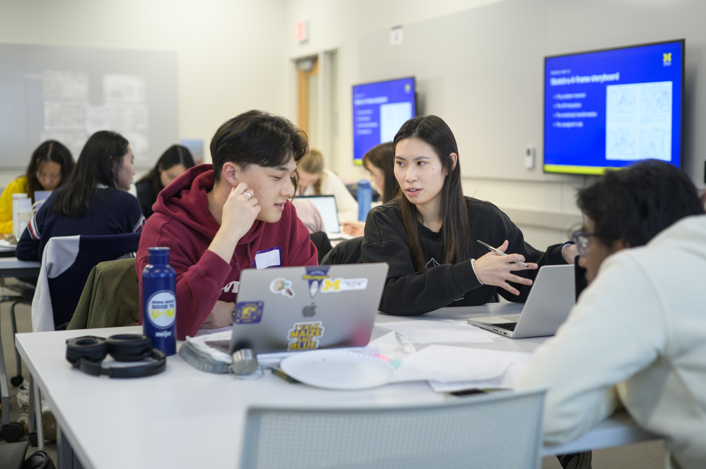

During Your Experience

Master the art of adaptive project management, human-centered fieldwork, and constructive feedback as you execute your project in real time.
The Value of Navigating Friction & Active Execution
The middle of an engaged learning project is where real growth happens—and where real challenges surface. Real-world projects rarely follow a straight line. Requirements shift, team dynamics evolve, clients face unexpected internal constraints, and research data yields surprising results.
The true value of this phase lies in developing resilience, adaptability, and ethical agility. Learning to manage "scope creep," navigate mid-project feedback, and re-align technical decisions with human needs are the exact experiences that distinguish top UMSI graduates. When you view friction not as a barrier, but as a natural part of the applied learning process, you develop the strategic problem-solving skills needed in modern information careers.
Phase 3: Managing & Executing in the Field
Conducting research, tracking progress, and maintaining clear communication with project sponsors.
Focus & Objectives
- Fieldwork & Research Methods: Apply human-centered design tools to observe contexts and extract insights.
- Sponsor & Client Updates: Maintain transparency with regular progress reporting.
- Feedback Loops: Gather, evaluate, and integrate constructive feedback mid-project.
Featured Active-Project Resources
| Category | Resource Name | Purpose |
|---|---|---|
| Observation and Needfinding | HFLI AEIOU Worksheet for Observations | Framework to categorize field observations: activities, environments, interactions, objects, and users. |
| User Research | HFLI User-Needs-Insights Worksheet | Translates raw interview and observation data into actionable design insights. |
| Feedback Management | HFLI Feedback Worksheet | Structures midpoint feedback cycles between students, instructors, and partners. |
| Case Analysis | Ginsberg Center Community Engagement Cases Handout | Practical scenarios illustrating ethical dilemmas and resolution strategies. |
| Sponsor Tracking | Sponsor Dashboard Template - Organizational Excellence | High-level status dashboard to keep external clients informed about project health. |
| Communications Plan | Student Project Communications Plan Example and Template | Establishes meeting cadences, channels, and response windows for teams. |
| Workflow Tracking | Project Management Worksheet | Hands-on tool for breaking down project goals into milestones and task assignments. |